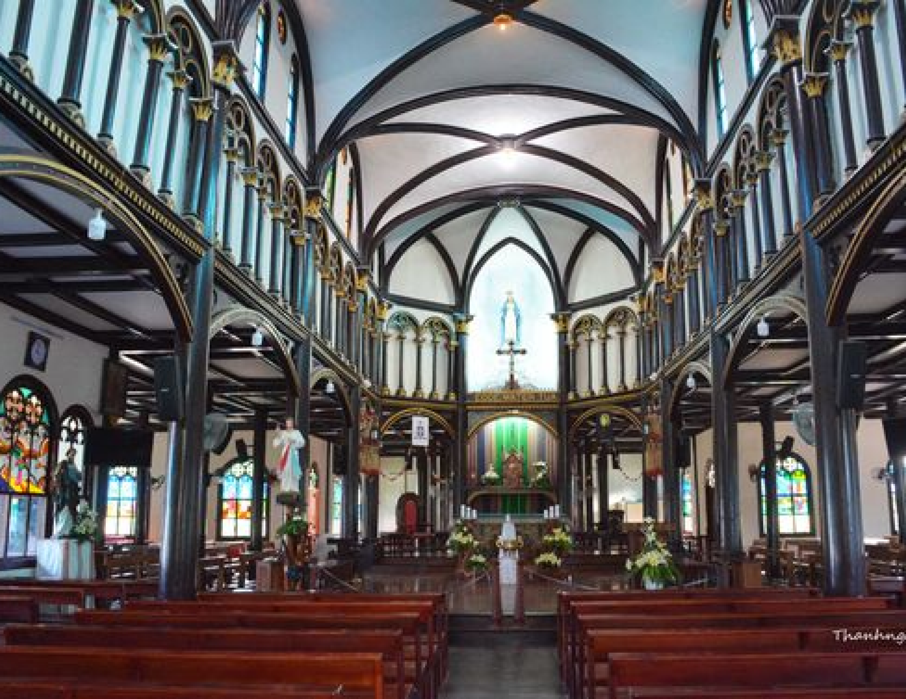
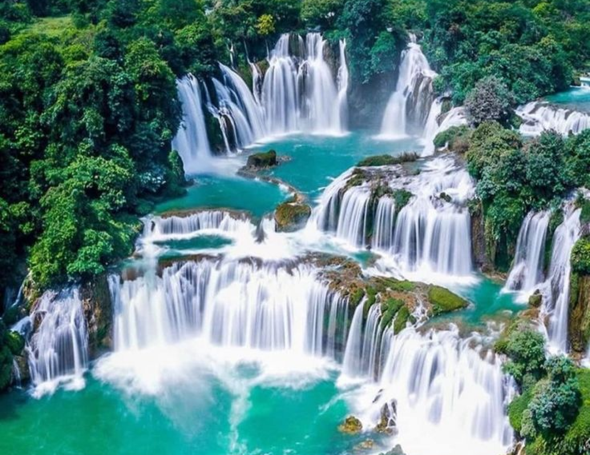

KON TUM
Kon Tum
Kon Tum, located in Vietnam's Central Highlands, is a province known for its rich cultural diversity and stunning natural landscapes. Home to various ethnic minority groups, Kon Tum offers visitors a glimpse into traditional village life, with its iconic stilt houses and vibrant festivals. The region is also famous for its scenic beauty, including lush forests, rivers, and the majestic Ngoc Linh Mountain.
Kon Tum is a destination for those seeking both cultural exploration and outdoor adventure in the heart of the Central Highlands.
UNMISSABLE ATTRACTIONS

Kon Tum Wooden Church
The Kon Tum Wooden Church, located in the heart of Kon Tum, is a traditional wooden architectural masterpiece combined with Romanesque style. Built entirely of wood in 1913, it showcases the craftsmanship of the local Bahnar people. This unique blend of indigenous and Western styles makes it a significant cultural and historical heritage in the Central Highlands. Surrounded by peaceful gardens, the church remains an important religious site and attracts many visitors.
Adress:
13 Nguyen Hue, Thong Nhat, Kon Tum City, Kon Tum Province, Vietnam.
Kon K'Tu Village
Kon K'Tu Village in Kon Tum Province is one of the oldest Ba Na ethnic villages in the Central Highlands. Known for its preserved stilt houses and rich cultural heritage, it offers visitors a glimpse into local life, with traditional music, dances, and the iconic communal rông house by the scenic Dak Bla River. It’s a must-visit for an authentic Central Highlands experience.
Adress:
Kon K'Tu Village, Kon Tum Province, Vietnam.


Yaly Waterfall
Yaly Waterfall, near Kon Tum in the Central Highlands, is a stunning natural wonder with powerful cascades and scenic surroundings. Encircled by lush forests, it symbolizes the region's wild beauty. Nearby is the Yaly Hydropower Plant, one of Vietnam's largest, adding to the area's importance. Visitors can enjoy breathtaking views, cool mist, and a serene atmosphere showcasing the raw beauty of the Central Highlands.
Adress:
Yaly Waterfall, Sa Thay District, Kon Tum Province, Vietnam.
HIDDEN GEMS OF HANOI

KON TUM - BUON MA THUOT - BUON DON - PLEIKU - KONTUM - MANG DEN
4 days
Availability : Every day
1 people